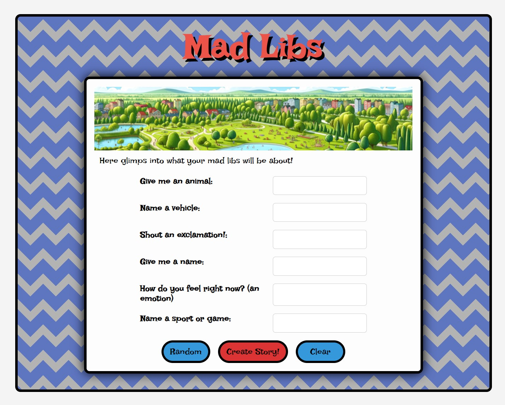

Madlibs 2.0 Visual and UX/UI Enhancement
Funtionality Improvement
The current Madlibs 2.0 project is functional yet far from optimal. Although it is close to my original design, there are rooms for improvment in user experience. By enhancing some visual elements and interaction feedback, I hope to create a Madlibs that is more enjoyable for the user.
